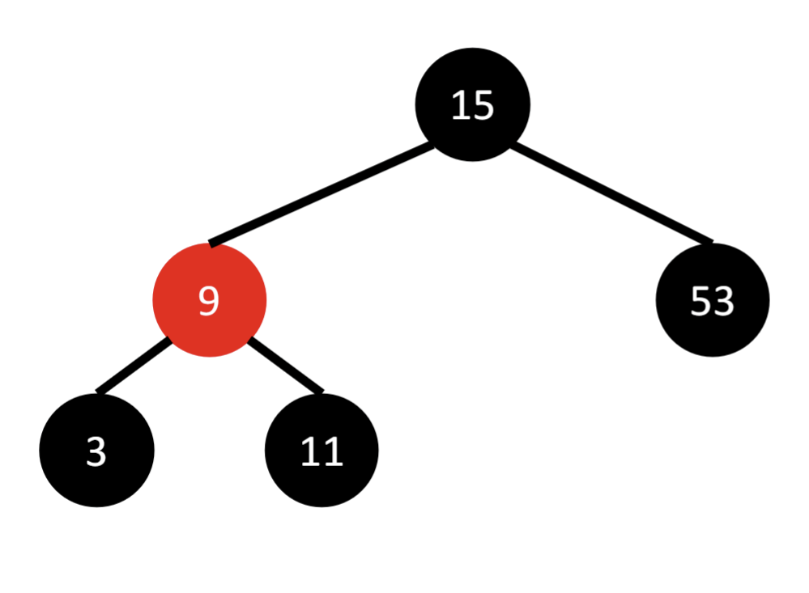

Properties of Red-Black Trees
- Each node is either red or black.
- The root node is always black.
- Red nodes cannot have red children (no two consecutive red nodes).
- Every path from the root to a leaf contains the same number of black nodes (black-height).
- The longest path in the tree is no more than twice the shortest path.
Balancing and Efficiency
Red-Black Trees are balanced to maintain efficient operations:
- Tree height remains approximately O(log n), ensuring fast searches.
- Rotations are used during insertion and deletion to restore balance.
- Maintains worst-case time complexity of O(log n) for all operations.
Example
The diagram below illustrates the properties of a Red-Black Tree:
